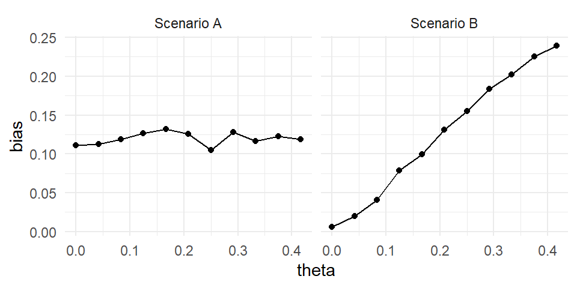

Chapter 9 Project: Cronbach Alpha
In this section we walk through a case study of Cronbach Alpha to give an extended “project,” or series of exercises, that illustrate writing a complete simulation generated by the filling out of the code skeleton we get from simhelpers’s create_skeleton() package.
9.1 Background
Cronbach’s \(\alpha\) coefficient is commonly reported as a measure of the internal consistency among a set of test items. Consider a set of \(p\) test items with population variance-covariance matrix \(\boldsymbol\Phi = \left[\phi_{ij}\right]_{i,j=1}^p\), where \(\phi_{ij}\) is the covariance of item \(i\) and item \(j\) on the test, across all students taking the test. This population variance-covariance matrix describes how our \(p\) test items co-vary.
Cronback’s \(\alpha\) is, under this model, defined as \[ \alpha = \frac{p}{p - 1}\left(1 - \frac{\sum_{i=1}^p \phi_{ii}}{\sum_{i=1}^p \sum_{j=1}^p \phi_{ij}}\right). \]
Given a sample of size \(n\), the usual estimate of \(\alpha\) is obtained by replacing the population variances and covariances with corresponding sample estimates. Letting \(s_{ij}\) denote the sample covariance of items \(i\) and \(j\)
\[ A = \frac{p}{p - 1}\left(1 - \frac{\sum_{i=1}^p s_{ii}}{\sum_{i=1}^p \sum_{j=1}^p s_{ij}}\right). \]
If we assume that the items follow a multivariate normal distribution, then \(A\) corresponds to the maximum likelihood estimator of \(\alpha\).
Our goal is to examine the properties of \(A\) when the set of \(P\) items is not multi-variate normal, but rather follows a multivariate \(t\) distribution with \(v\) degrees of freedom. For simplicity, we shall assume that the items have common variance and have a compound symmetric covariance matrix, such that \(\phi_{11} = \phi_{22} = \cdots = \phi_{pp} = \phi\) and \(\phi_{ij} = \rho \phi\). In this case we can simplify our expression for \(\alpha\) to
\[ \alpha = \frac{p \rho}{1 + \rho (p - 1)}. \]
9.2 Getting started
First create the skeleton of our simulation. We will then walk through filling in all the pieces.
9.3 The data-generating function
The first two sections in the skeleton are about the data-generating model:
rm(list = ls())
#------------------------------------------------------
# Set development values for simulation parameters
#------------------------------------------------------
# What are your model parameters?
# What are your design parameters?
#------------------------------------------------------
# Data Generating Model
#------------------------------------------------------
dgm <- function(model_params) {
return(dat)
}
# Test the data-generating model - How can you verify that it is correct?We need to create and test a function that takes model parameters (and sample sizes and such) as inputs, and produces a simulated dataset. The following function generates a sample of \(n\) observations of \(p\) items from a multivariate \(t\)-distribution with a compound symmetric covariance matrix, intra-class correlation \(\rho\), and \(v\) degrees of freedom:
# model parameters
alpha <- 0.73 # true alpha
df <- 12 # degrees of freedom
# design parameters
n <- 50 # sample size
p <- 6 # number of items
library(mvtnorm)
r_mvt_items <- function(n, p, alpha, df) {
icc <- alpha / (p - alpha * (p - 1))
V_mat <- icc + diag(1 - icc, nrow = p)
X <- rmvt(n = n, sigma = V_mat, df = df)
colnames(X) <- LETTERS[1:p]
X
}Note how we translate the target \(\alpha\) to \(ICC\) for our DGP; we will see this type of translation more later on.
We check our method first to see if we get the right kind of data:
## A B C
## [1,] 2.3124033 1.4871021 0.31446430
## [2,] -1.4587950 -1.3283014 0.63908069
## [3,] 1.5629021 -0.8914364 -0.54087633
## [4,] -0.3940601 -0.5341222 0.67531815
## [5,] 0.3540992 1.0526006 0.30111128
## [6,] -0.6923360 -2.4674208 -0.83354515
## [7,] 1.0175186 1.3437649 1.02493679
## [8,] -0.7536926 -0.8084425 -0.09497557It looks like we have 8 observations of 3 items, as desired.
To check that the function is indeed simulating data following the intended distribution, let’s next generate a very large sample of items. We can then verify that the correlation matrix of the items is compound-symmetric and that the marginal distributions of the items follow \(t\)-distributions with specified degrees of freedom.
## A B C D
## A 1.000 0.398 0.395 0.396
## B 0.398 1.000 0.393 0.400
## C 0.395 0.393 1.000 0.402
## D 0.396 0.400 0.402 1.000Is this what it should look like?
We can also check normality:

Looks good! A nice straight line.
9.4 The estimation function
The next section of the template looks like this:
#------------------------------------------------------
# Model-fitting/estimation/testing functions
#------------------------------------------------------
estimate <- function(dat, design_params) {
return(result)
}
# Test the estimation functionvan Zyl, Neudecker, and Nel (2000) demonstrate that, if the items have a compound-symmetric covariance matrix, then the asymptotic variance of \(A\) is \[ \text{Var}(A) \approx \frac{2p(1 - \alpha)^2}{(p - 1) n}. \] Substituting \(A\) in place of \(\alpha\) on the right hand side gives an estimate of the variance of \(A\). The following function calculates \(A\) and its variance estimator from a sample of data:
estimate_alpha <- function(dat) {
V <- cov(dat)
p <- ncol(dat)
n <- nrow(dat)
# Calculate A with our formula
A <- p / (p - 1) * (1 - sum(diag(V)) / sum(V))
# Calculate our estimate of the variance (SE^2) of A
Var_A <- 2 * p * (1 - A)^2 / ((p - 1) * n)
# Pack up our results
data.frame(A = A, Var = Var_A)
}
estimate_alpha(small_sample)## A Var
## 1 0.7080628 0.03196024The psych package provides a function for calculating \(\alpha\), which can be used to verify that the calculation of \(A\) in estimate_alpha is correct:
## Number of categories should be increased in order to count frequencies.##
## Reliability analysis
## raw_alpha std.alpha G6(smc) average_r S/N ase
## 0.71 0.7 0.87 0.44 2.4 0.13
## mean sd median_r
## 0.054 0.93 0.63## NULLThe next step is to evaluate these individual estimates and see how well our estimator \(A\) performs.
9.4.1 Exercices (Naive confidence intervals)
- One way to obtain an approximate confidence interval for \(\alpha\) would be to take \(A \pm z \sqrt{\text{Var}(A)}\), where \(\text{Var}(A)\) is estimated as described above and \(z\) is a standard normal critical value at the appropriate level (i.e., \(z = 1.96\) for a 95% CI).
Extend your simulation to calculate a confidence interval for each simulation round (put this code inside
estimate_alpha()) and then calculate confidence interval coverage.
Your estimate_alpha would then give a result like this:
## A Var CI_low CI_high
## 1 0.9425904 0.0001647933 0.916916 0.9682647- You can calculate confidence intervals with coverage other than 95% by calculating an appropriate number of standard errors, \(z\) (usually just taken as 2, as above, for a nominal 95%), with
## [1] 1.959964Extend estimate_alpha() to allow for a specified coverage by adding a parameter, coverage, along with a default of 0.95. Revise the body of estimate_alpha to calculate a confidence interval with the specified coverage rate.
9.5 Estimator performance
The next section of the template deals with performance calculations.
#------------------------------------------------------
# Calculate performance measures
# (For some simulations, it may make more sense
# to do this as part of the simulation driver.)
#------------------------------------------------------
performance <- function(results, model_params) {
return(performance_measures)
}
# Check performance calculationsThe performance() function takes as input a bunch of simulated data (which we might call results) and the true values of the model parameters (model_params) and returns as output a set of summary performance measures. As noted in the comments above, for simple simulations it might not be necessary to write a separate function to do these calculations. For more complex simulations, though, it can be helpful to break these calculations out in a function.
To start to get the code working that we would put into this function, it is useful to start with some simulation replicates to practice on. We can generate 1000 replicates using samples of size \(n = 40\), \(p = 6\) items, a true \(\alpha = 0.8\), and \(v = 5\) degrees of freedom:
one_run <- function( n, p, alpha, df ) {
dat <- r_mvt_items(n = n, p = p, alpha = alpha, df = df)
estimate_alpha(dat)
}
true_alpha = 0.7
results = rerun( 1000, one_run(40, 6, alpha=true_alpha, df=5) ) %>%
bind_rows()9.5.1 Exercises (Calculating Performance)
For the Cronbach alpha simulation, we might want to calculate the following performance measures:
With the parameters specified above, calculate the bias of \(A\). Also calculate the Monte Carlo standard error (MCSE) of the bias estimate.
Estimate the true Standard Error of \(A\).
Calculate the mean squared error of \(A\).
Calculate the relative bias of the asymptotic variance estimator.
Using the work from above, wrap your code in an
alpha_performance()function that takes the results of usesrun_alpha_simand returns a one-row data frame with columns corresponding to the bias, mean squared error, relative bias of the asymptotic variance estimator.
E.g.,
## bias bias_SE SE MSE
## 1 -0.02329445 0.003741931 0.1183302 0.1205433
## bias_Var
## 1 0.5078144Extend your function to add in the MCSEs for the SE and MSE. Code up the skewness and kurtosis values by hand, using the formula in the MCSE section of the performance measure chapter.
(Challenge problem) Code up a jackknife MCSE function to calculate the MCSE for the relative bias of the asymptotic variance estimator. Use the following template that takes a vector of point estimates and associated standard errors.
You would use this function as:
9.6 Replication (and the simulation)
We now have all the components we need to get simulation results, given a set of parameter values. In the next section of the template, we put all these pieces together in a function—which we might call the simulation driver—that takes as input 1) parameter values, 2) the desired number of replications, and 3) optionally, a seed value (this allows for reproducability, see Chapter 15. The function produces as output a single set of performance estimates. Generically, the function looks like this:
#-----------------------------------------------------------
# Simulation Driver - should return a data.frame or tibble
#-----------------------------------------------------------
runSim <- function(iterations, model_params, design_params, seed = NULL) {
if (!is.null(seed)) set.seed(seed)
results <- rerun(iterations, {
dat <- dgm(model_params)
estimate(dat, design_params)
}) %>%
bind_rows()
performance(results, model_params)
}
# demonstrate the simulation driverThe runSim function should require very little modification for a new simulation. Essentially, all we need to change is the names of the functions that are called, so that they line up with the functions we have designed for our simulation. Here’s what this looks like for the Cronbach alpha simulation (we pull out the code to replicate into its own method, one_run(), which helps with debugging):
#-----------------------------------------------------------
# Simulation Driver - should return a data.frame or tibble
#-----------------------------------------------------------
one_run <- function( n, p, alpha, df ) {
dat <- r_mvt_items(n = n, p = p, alpha = alpha, df = df)
estimate_alpha(dat)
}
run_alpha_sim <- function(iterations, n, p, alpha, df, seed = NULL) {
if (!is.null(seed)) set.seed(seed)
results <-
rerun(iterations, one_run(n, p, alpha, df) ) %>%
bind_rows()
alpha_performance(results, alpha = alpha)
}9.7 Extension: Confidence interval coverage
However, van Zyl, Neudecker, and Nel (2000) suggest that a better approximation involves first applying a transformation to \(A\) (to make it more normal in shape), then calculating a confidence interval, then back-transforming to the original scale (this is very similar to the procedure for calculating confidence intervals for correlation coefficients, using Fisher’s \(z\) transformation). Let our transformed parameter and estimator be
\[ \begin{aligned} \beta &= \frac{1}{2} \ln\left(1 - \alpha\right) \\ B &= \frac{1}{2} \ln\left(1 - A\right) \end{aligned} \]
and our transformed variance estimator be
\[ V^B = \frac{p}{2 n (p - 1)}. \] (This expression comes from a Delta method expansion on \(A\).)
An approximate confidence interval for \(\beta\) is given by \([B_L, B_U]\), where
\[ B_L = B - z \sqrt{V^B}, \qquad B_U = B + z \sqrt{V^B}. \]
Applying the inverse of the transformation gives a confidence interval for \(\alpha\):
\[ \left[1 - \exp(2B_U), \ 1 - \exp(2 B_L)\right]. \]
9.8 A taste of multiple scenarios
In the previous sections, we’ve created code that will generate a set of performance estimates, given a set of parameter values. We can created a dataset that represents every combination of parameter values that we want to examine. How do we put the pieces together?
If we only had a couple of parameter combinations, it would be easy enough to just call our run_alpha_sim function a couple of times:
## bias bias_SE SE MSE
## 1 -0.01211522 0.01088426 0.1088426 0.1089725
## bias_Var
## 1 0.4913622## bias bias_SE SE MSE
## 1 -0.0117337 0.00761985 0.0761985 0.07671916
## bias_Var
## 1 0.4727169## bias bias_SE SE MSE
## 1 -0.02601087 0.01120983 0.1120983 0.1145292
## bias_Var
## 1 0.4319068## bias bias_SE SE MSE
## 1 0.007758062 0.006203414 0.06203414 0.06220884
## bias_Var
## 1 0.5299059But in an actual simulation we will probably have too many different combinations to do this “by hand.” The final sections of the simulation template demonstrate two different approaches to doing the calculations for every combination of parameter values, given a set of parameter values one wants to explore.
This is discussed further in Chapter @ref(exp_design), but let’s get a small taste of doing this now.
In particular, the following code will evaluate the performance of \(A\) for true values of \(\alpha\) ranging from 0.5 to 0.9 (i.e., alpha_true_seq <- seq(0.5, 0.9, 0.1)) via map_df():
alpha_true_seq <- seq(0.5, 0.9, 0.1)
results <- map_df( alpha_true_seq,
run_simulation,
R = 100,
n = 50, p = 5, df = 5 )How does coverage change for different values of \(A\)?
9.8.1 Exercises
Show the inverse transform of \(B = g(A)\) gives the above expression.
Make a new function,
estimate_alpha_xform()that, given a dataset, calculates a confidence interval for \(\alpha\) following the method described above.Using the modified
estimate_alpha_xform(), generate 1000 replicated confidence intervals for \(n = 40\), \(p = 6\) items, a true \(\alpha = 0.8\), and \(v = 5\) degrees of freedom. Using these replicates, calculate the true coverage rate of the confidence interval. Also calculate the Monte Carlo standard error (MCSE) of this coverage rate.Calculate the average length of the confidence interval for \(\alpha\), along with its MCSE.
Compare the results of this approach to the more naive approach. Are there gains in performance?
Challenge Derive the variance expression for the transformed estimator using the Delta method on the variance expression for \(A\) coupled with the transform. The Delta method says that:
\[ var( f(A) ) \approx \frac{1}{f'(\alpha)} (A - \alpha)^2 . \]